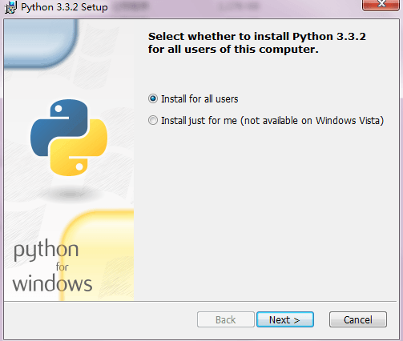
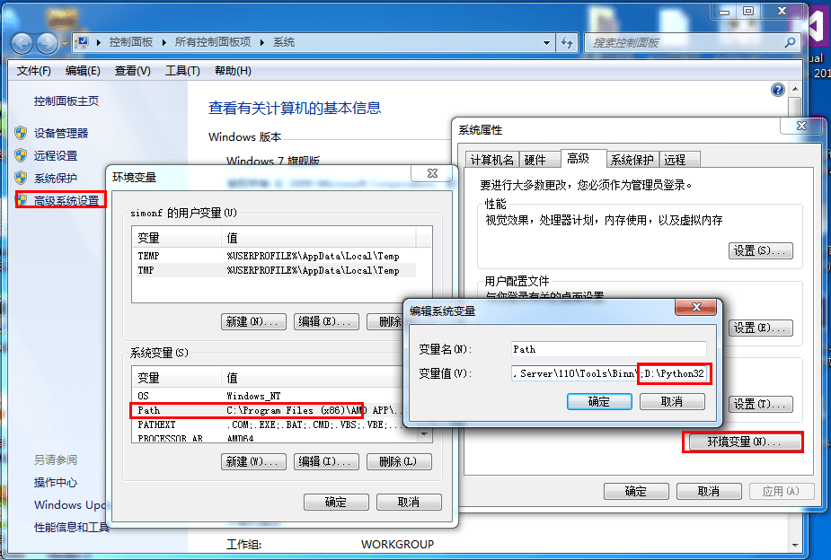
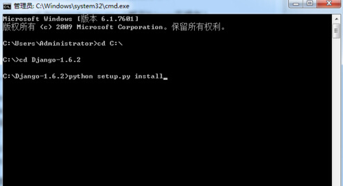
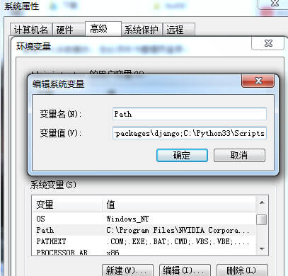
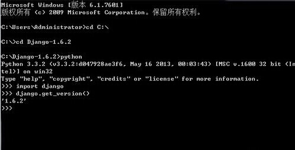

Django 教程
Python下有许多款不同的 Web 框架。Django是重量级选手中最有代表性的一位。许多成功的网站和APP都基于Django。
Django是一个开放源代码的Web应用框架，由Python写成。
Django遵守BSD版权，初次发布于2005年7月, 并于2008年9月发布了第一个正式版本1.0 。
Django采用了MVC的软件设计模式，即模型M，视图V和控制器C。
内容来源：http://www.runoob.com/django/django-tutorial.html
Digngo教程
谁适合阅读本教程？
本教程适合有Python基础的开发者学习。
学习本教程前你需要了解
学习本教程前你需要了解一些基础的 Web 知识及 Python 2.x 基础教程 或 Python 3.x 基础教程。
Django 版本对应的 Python 版本：
| Diango版本 | Python版本 |
|---|---|
| 1.8 | 2.7, 3.2, 3.3, 3.4, 3.5 |
| 1.9, 1.10 | 2.7, 3.4, 3.5 |
| 1.11 | 2.7, 3.4, 3.5, 3.6 |
| 2.0 | 3.5+ |
Diango安装
在安装 Django 前，系统需要已经安装了Python的开发环境。接下来我们来具体看下不同系统下Django的安装。
Window 下安装 Django
如果你还未安装Python环境需要先下载Python安装包。
1、Python 下载地址：https://www.python.org/downloads/
2、Django 下载地址：https://www.djangoproject.com/download/
注意：目前Django 1.6.x以上版本已经完全兼容Python 3.x。
Python 安装(已安装的可跳过)
安装Python你只需要下载python-x.x.x.msi文件，然后一直点击”Next”按钮即可。

安装完成后你需要设置Python环境变量。 右击计算机->属性->高级->环境变量->修改系统变量path，添加Python安装地址，本文实例使用的是C:\Python33，你需要根据你实际情况来安装。

Django安装
下载 Django 压缩包，解压并和Python安装目录放在同一个根目录，进入 Django 目录，执行python setup.py install，然后开始安装，Django将要被安装到Python的Lib下site-packages。

然后是配置环境变量，将这几个目录添加到系统环境变量中： C:\Python33\Lib\site-packages\django;C:\Python33\Scripts。 添加完成后就可以使用Django的django-admin.py命令新建工程了。

检查是否安装成功
输入以下命令进行检查:
|
|

如果输出了Django的版本号说明安装正确。